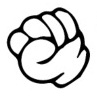

Reglene er enkle: Hver spiller starter med knyttet neve, og beveger armen opp og ned et avtalt antall ganger (vanligvis tre eller fire) før begge spillerne viser tegnene samtidig.
Tegnene er som følger:
«Stein» (knyttet neve) – taper for papir (pakkes inn), men vinner over saks (sløver).

«Saks» (peke- og langfinger utstrukket i ca. 30-45 graders vinkel, vertikalt) – taper for stein (sløves), men vinner over papir (klipper)
«Papir» (hånden ut, alle fingrene sammen horisontalt) – taper for saks (klippes), vinner over stein (pakker inn)
Hvert tegn slår altså et annet.
Dersom begge spillerne gir samme tegn, blir resultatet uavgjort, og man må spille om igjen helt til en spiller slår den andre.